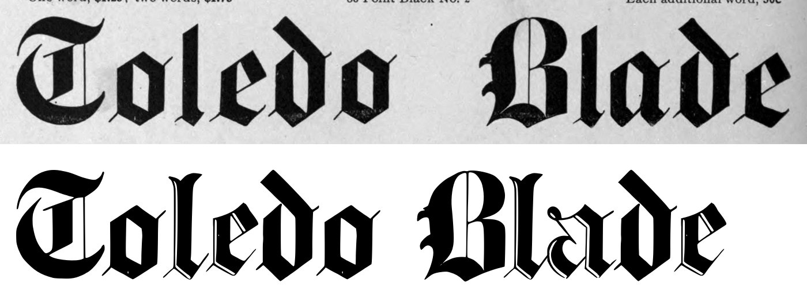
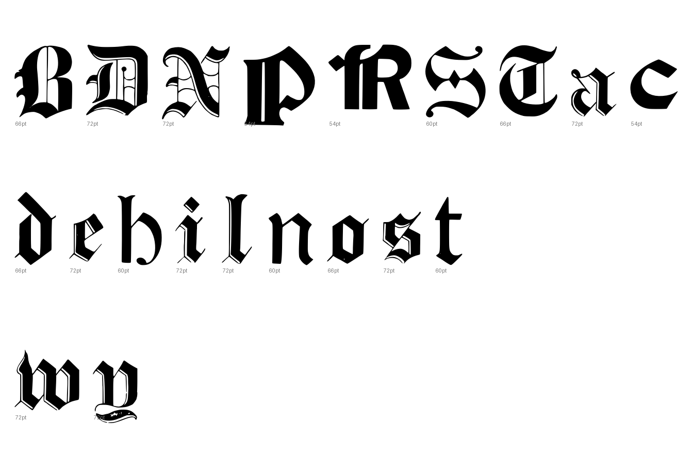
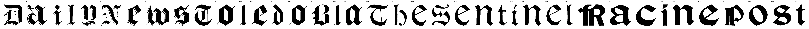

Gray letters are constructed, not traced.


7 warnings, 6 notes.
[
{
"level": "info",
"check": "pieces",
"glyph": "D",
"value": 2,
"note": "the cut joined more than one ink component"
},
{
"level": "warn",
"check": "contours",
"glyph": "D",
"value": 8,
"note": "more than four contours; specks or a broken trace"
},
{
"level": "info",
"check": "specks",
"glyph": "a",
"value": 1,
"note": "marks beside the letter were recorded, not cut"
},
{
"level": "info",
"check": "specks",
"glyph": "y",
"value": 1,
"note": "marks beside the letter were recorded, not cut"
},
{
"level": "warn",
"check": "contours",
"glyph": "y",
"value": 10,
"note": "more than four contours; specks or a broken trace"
},
{
"level": "info",
"check": "specks",
"glyph": "N",
"value": 1,
"note": "marks beside the letter were recorded, not cut"
},
{
"level": "warn",
"check": "contours",
"glyph": "N",
"value": 10,
"note": "more than four contours; specks or a broken trace"
},
{
"level": "warn",
"check": "contours",
"glyph": "e",
"value": 5,
"note": "more than four contours; specks or a broken trace"
},
{
"level": "warn",
"check": "contours",
"glyph": "w",
"value": 5,
"note": "more than four contours; specks or a broken trace"
},
{
"level": "warn",
"check": "contours",
"glyph": "s",
"value": 6,
"note": "more than four contours; specks or a broken trace"
},
{
"level": "info",
"check": "specks",
"glyph": "T",
"value": 1,
"note": "marks beside the letter were recorded, not cut"
},
{
"level": "warn",
"check": "contours",
"glyph": "B",
"value": 5,
"note": "more than four contours; specks or a broken trace"
},
{
"level": "info",
"check": "specks",
"glyph": "a.66pt",
"value": 1,
"note": "marks beside the letter were recorded, not cut"
}
]
{
"872:72pt": {
"n_caps": 2,
"cap_height_px": 336.5,
"cap_source": "caps",
"baseline_px": 3460.5,
"baselines": {
"6": 3460.5
},
"glyphs": [
"D",
"a",
"i",
"l",
"y",
"N",
"e",
"w",
"s"
],
"x_height_px": 283,
"stem_px": 4.0,
"scale": 2.08024,
"stem_units": 8.3,
"x_height": 589
},
"872:66pt": {
"n_caps": 2,
"cap_height_px": 314.5,
"cap_source": "caps",
"baseline_px": 2818.5,
"baselines": {
"5": 2818.5
},
"glyphs": [
"T",
"o",
"l.66pt",
"e.66pt",
"d",
"o.66pt",
"B",
"l.66pt_2",
"a.66pt"
],
"x_height_px": 217,
"stem_px": 4.0,
"scale": 2.22576,
"stem_units": 8.9,
"x_height": 483
},
"872:60pt": {
"n_caps": 2,
"cap_height_px": 291.5,
"cap_source": "caps",
"baseline_px": 1598.5,
"baselines": {
"3": 1598.5
},
"glyphs": [
"T.60pt",
"h",
"e.60pt",
"S",
"e.60pt_2",
"n",
"t",
"i.60pt",
"n.60pt",
"e.60pt_3",
"l.60pt"
],
"x_height_px": 211,
"stem_px": 9.0,
"scale": 2.40137,
"stem_units": 21.6,
"x_height": 507
},
"872:54pt": {
"n_caps": 2,
"cap_height_px": 286.5,
"cap_source": "caps",
"baseline_px": 2202.5,
"baselines": {
"4": 2202.5
},
"glyphs": [
"R",
"a.54pt",
"c",
"i.54pt",
"n.54pt",
"e.54pt",
"P",
"o.54pt",
"s.54pt",
"t.54pt"
],
"x_height_px": 199.5,
"stem_px": 46.0,
"scale": 2.44328,
"stem_units": 112.4,
"x_height": 487
}
}
{
"archive_id": "bookoftypespecim00barnrich",
"title": "Book of type specimens. Comprising a large variety of superior copper-mixed types, rules, borders, galleys, printing presses, electric-welded chases, paper and card cutters, wood goods, book binding machinery etc., together with valuable information to the craft. Specimen book no.9",
"creator": [
"Barnhart, bros. & Spindler, firm, type founders, Chicago",
"De Young family",
"De Young, Charles, 1881-"
],
"publisher": "Chicago, Barnhart bros. & Spindler",
"date": "[1907]",
"ppi": 400,
"url": "https://archive.org/details/bookoftypespecim00barnrich",
"copyright_status": "NOT_IN_COPYRIGHT",
"contributor": "University of California Libraries",
"leaves": [
872
]
}